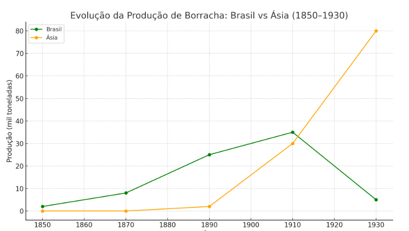
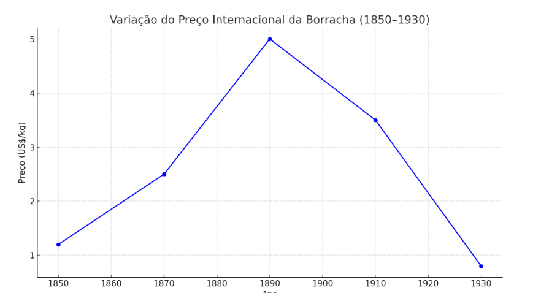

INTRODUÇÃO
Entre 1850 e 1930, a Amazônia foi palco de uma das maiores transformações econômicas do
Brasil: o Ciclo da Borracha.
O Ciclo da Borracha foi um período de intensa exploração econômica da seringueira (Hevea brasiliensis), árvore nativa da floresta amazônica. O látex extraído dela era exportado principalmente para a Europa e os Estados Unidos, abastecendo indústrias que, com a Revolução Industrial, exigiam cada vez mais borracha para pneus, correias, fios e diferentes produtos.
Esse ciclo não trouxe apenas riqueza: também promoveu grande fluxo migratório, avanços urbanos e culturais, mas gerou desigualdade, violência e devastação ambiental. Manaus e Belém tornaram-se símbolos do luxo tropical, mas milhares de trabalhadores e povos indígenas foram explorados duramente.
Após um auge espetacular, a região mergulhou em crise com a concorrência asiática, deixando marcas profundas que ainda hoje influenciam a história, a economia e a cultura do Norte do Brasil.
Apogeu Econômico (1879-1912)

Entre o fim do século XIX e 1912, a Amazônia viveu uma fase de riqueza inédita. A borracha tornou-se o “ouro branco” da floresta, alimentando indústrias globais. Manaus foi chamada de “Paris dos Trópicos”: tinha energia elétrica, bonde, jornal diário, clubes de elite, cinema e o suntuoso Teatro Amazonas, inaugurado em 1896, importando mármore da Itália e lustres da França.
O sistema do aviamento dominava a economia: comerciantes financiavam a ida de trabalhadores (seringueiros) à floresta, adiantando ferramentas e mantimentos — mas cobrando preços altos e criando dívidas impagáveis. A elite amazônica desfilava em festas e importava modas da Europa, enquanto a maior parte da população vivia em condições precárias.
Belém também prosperou, integrando-se ao mercado internacional e recebendo imigrantes, produtos de luxo e grandes obras públicas, como o Mercado Ver-o-Peso.
Impactos Sociais, Humanos e Ambientais
O progresso teve um custo profundo. Seringueiros, em sua maioria migrantes do Nordeste, enfrentavam jornadas exaustivas, doenças tropicais (como malária e febre amarela), isolamento, violência de patrões e dívidas que se acumulavam geração após geração.
As populações indígenas foram as mais afetadas: expulsas de seus territórios, muitas foram escravizadas ou exterminadas em conflitos e epidemias trazidas pelos colonizadores. Calcula-se que milhares de indígenas desapareceram neste período.
O meio ambiente também sofreu: a abertura de trilhas, queimadas, ocupação desordenada e a pressão sobre a floresta e seus rios mudaram para sempre partes da Amazônia.
Declínio e Colapso Econômico
O ciclo entrou em decadência após 1912, quando ingleses, de forma clandestina, levaram sementes de seringueira para o Sudeste Asiático. Lá, criaram plantações industriais (Malásia, Indonésia, Ceilão), muito mais produtivas e baratas, usando técnicas modernas de cultivo.
Em poucos anos, a borracha asiática inundou o mercado mundial, derrubou preços e tirou o Brasil da liderança. A economia amazônica colapsou rapidamente: cidades que antes ostentavam riqueza passaram a enfrentar desemprego, abandono de obras e migração em massa. Muitos trabalhadores ficaram presos à floresta, sem recursos para voltar para casa.
O fim do ciclo deixou marcas sociais, urbanas e ambientais profundas, além de um sentimento de nostalgia e frustração que ecoa até hoje na cultura local.
Curiosidades e Legados
- O ciclo chegou a responder por 40% de todas as exportações brasileiras no início do século XX.
- O famoso “Barão da Borracha”: Alguns comerciantes enriqueceram tanto que receberam títulos de nobreza do Império Brasileiro.
- Teatro Amazonas: Quase todo o material de sua construção veio da Europa, incluindo o teto pintado em Paris.
- Amazônia como “Eldorado”: O ciclo atraiu aventureiros, cientistas e artistas do mundo inteiro à região.
- O ciclo inspirou obras literárias, filmes e músicas que retratam tanto o fascínio quanto a tragédia desse período.
- O ciclo da borracha teve um “revival” durante a 2ª Guerra Mundial, quando o Brasil voltou a exportar o produto em massa para suprir os Aliados.
Linha do Tempo
- 1850: Início da expansão da extração de látex na Amazônia.
- 1879: Explosão da demanda internacional por borracha.
- 1896: Inauguração do Teatro Amazonas, símbolo do luxo amazônico.
- 1910: Sementes de seringueira chegam à Ásia; produção industrial começa.
- 1912: Crise da borracha brasileira: preços caem, exportação despenca.
- 1930: Encerramento do ciclo, colapso econômico na região.
- 1942: “Soldados da borracha”: durante a Segunda Guerra, milhares de nordestinos voltam a cortar seringa para suprir os Aliados.
Gráficos
Gráfico 1: Evolução da produção de borracha brasileira vs produção asiática (1850-1930).
Gráfico 2: Variação do preço internacional da borracha (em dólares) ao longo do ciclo.
Podcast: O Ciclo da Borracha
Ouça um episódio especial sobre os principais fatos, curiosidades e impactos do Ciclo da Borracha na Amazônia.
Quiz: Teste seus conhecimentos
Conclusão
O Ciclo da Borracha é um capítulo de contrastes: riqueza e progresso para poucos, sofrimento e exclusão para muitos. Revela tanto o potencial quanto os perigos do extrativismo predatório. Compreender essa história é fundamental para pensar novos caminhos para a Amazônia e para o Brasil.
Referências
- Toda Matéria – Ciclo da Borracha
- Mundo Educação – Ciclo da Borracha
- Wikipedia – Ciclo da Borracha
- Brasil Escola – Ciclo da Borracha
- Dean, Warren. A luta pela borracha no Brasil. Paz e Terra, 1989.